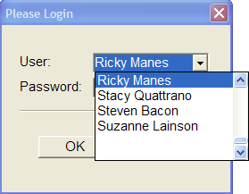
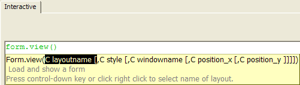

Xbasic Manipulation of Objects
You have now learned how to program object events. In Exercise 9, you used one line of Xbasic code in each of two event scripts to change the appearance of an object (the Field1 control) that is part of the Count Seconds form.
There are basically three things you can manipulate with Xbasic commands:
Variables
Tables
Objects
Xbasic can be used to create, change, display, update and destroy the three Alpha Five components listed above. But, Alpha Five is primarily a database application development tool and, in fact, all layouts (the means by which you display windows (data)) must be associated with a table or set as its data source. Later on, you will be introduced to some Xbasic scripts that primarily manipulate tables and the data contained in them. Right now, though, you will look more closely at how you can use Xbasic to manipulate objects found on layouts.
In order to understand the examples you will read about in coming exercises, you will need to understand a little about the Phone Messages sample application and what it is designed to do.
The Phone Messages application allows the recording and retrieval of phone messages for a population of users. The users of this application can be either takers or receivers of messages (so anyone in the office can take a message for anyone else). User data is stored in the table named message_tr (where "tr" stands for takers or receivers).
Some users are designated as administrators. Administrators can do all the things that regular users can do, but they also have access to the portion of the program that enables user administration. The user administration form can be used to add, change or delete user information.
The Phone Message application begins when you launch the Sign In form. The Sign In form asks you to enter a user ID and password to gain access. As you can see from the message_tr table structure on the right, each user has a field named Tr_Administrator that indicates whether or not that user is an administrator. After you sign in, you will see one of two different menu choices depending on whether or not the id you signed in with is an administrator. Figures 42 and 43 show the way the form displays different data depending on the type of user who is logged in.
In the next exercise, you will view the event scripts that check the values of variables and then dynamically change the form display (the form object and sub objects) depending on those values.
|
You can use an Xdialog window to do most everything you can do with a form layout (and more) but Xdialog windows do not require a table or set association. See the book Learning Xdialog for more information. |

Figure 41
|
You are looking at a portion of the same form in each of the two figures at the right. The form appears to expand the radio control choices depending on whether the logged in user is an administrator or not. What is actually happening is that two different radio controls were placed on the Sign In form (Radio1 and Radio2). Radio1 has two choices. Radio2 has three choices. Both radio controls are hidden when the form is initialized. After user logon, a logical form variable is_admin is set and Alpha Five unhides the appropriate radio control. Another form variable (this one of type character) named user_type is set by either radio control. After you have selected what you want to do from the radio control, the user_type variable setting is used by the OnPush event of the Next button to determine what form Alpha Five displays next. The radio1 control sets the user_type variable to either receiver or taker. The radio2 control sees the user_type variable to receiver, taker or administrator. In the next exercise, you will see how Xbasic commands executed in different object events set these variable values and object properties to direct the flow of the application in the appropriate way (i.e., to display the correct choices for an administrator or non-administrator user. |
Figure 42
The radio control has two choices after you log in with a non-administrator ID. The user ID used to logon here is Michael Ahn.
Figure 43
The radio control has three choices after you log in with an administrator ID. The user ID used to logon here is Ricky Manes
View the Sign In form.
Click the Please Login button.
Choose the user: "Ricky Manes". This is an administrator ID.
Enter the password: "password".
Click OK to logon and continue. Alpha Five displays the following screen:
Click Next to see Ricky's messages. You can click on any of the buttons on the left side of the window to see various messages for Ricky.
Close the form by clicking the Exit button. You are returned to the Sign In form.
Select "Take messages" and then click Next. You will see the message entry form.
Take a message if you wish and then close the window with the Exit button. You are returned to the Sign In form.
Select "Manage Users" and then click Next. The Administration form loads.
Scroll through the users. Add a user if you like. If you want the user to be an Administrator, select the Administrator? field.
Close the Administration form. Now that you have seen how this application works, you are going to enter design mode for the Sign In form and see how the different choices you made for what to do next in the radio control on the form layout are presented and processed by Alpha Five.
Press the Exit button to close the application. You are in the Control Panel window.
Enter design mode for the Sign In form.
Open the Code Explorer.
Press the
 Variables button on the toolbar
to display the form's variables. Now you will examine parts of some of
these event scripts to see how Xbasic commands manipulate the objects
and variables of this form.
Variables button on the toolbar
to display the form's variables. Now you will examine parts of some of
these event scripts to see how Xbasic commands manipulate the objects
and variables of this form.

Figure 44

Figure 45
The "See your messages" option is selected in the radio control.
|
The Sign_In object (the form layout object) has an OnInit event defined. OnInit executes when the form is first initialized. The Button1 object (Please Login) has an OnPush event defined. This control is displayed when the form is first loaded. This OnPush event loads the Xdialog box where you enter a user id and password and then (after a successful logon) it hides the Button1 control. This event also sets the value of the user_name, user_id and is_admin variables. Then, depending on the value of is_admin, it unhides the appropriate radio control, Radio1 or Radio2. On this form, Radio2 (which has three choices) is displayed. (Note: Radio1 and Radio2 are aligned so that Radio2 lines up with and sits behind Radio1 in design mode). The Radio2 control then sets the value of the user_type variable. The Button2 object (Next) has an OnPush event defined. This button checks the value of the user_type variable (set by the Radio1 or Radio2 control) and then loads the next appropriate form (either Take Message, Review Messages or Administration ). |

Figure 46
In the Code Explorer, select the "BUTTON1.OnPush" event. The code for this event is shown in the code box on the right. To get a bigger view of the code without scrolling you need to view it in the Code Editor.
Press the Edit Code button. This event's code is loaded in the Code Editor.
|
The Sign_In.OnInit event prepares the data records to be date relevant whenever the application is run and you can examine the code if you like. In the remainder of this exercise, you will review the code for the Button1 and Button2 OnPush events. |
Figure 47
Variables used in this script are DIMmed at the beginning. DIMming a variable means Alpha Five knows what type of data you want to store in that variable and can catch errors and enables Alpha Five to use computer memory more efficiently.
|
DIM varC_result as C DIM goodtogo as L DIM user_password as C DIM stored_password as C |
Some of the variables dimmed above and some global variables that were defined on the Sign In form are assigned values. The variable goodtogo indicates if a valid password was entered. Before the Please Login window is loaded goodtogo is False.
|
goodtogo = .F. user_name = "" user_password = "" user_id = "" |
This is a special Xbasic Xdialog command. The varC_result variable is set to the value returned by a dialog box that is opened by the ui_dlg_box command. A dialog box is a pop-up window where you can prompt for data entry or just display information. A dialog box asks for user input (perhaps just clicking OK to continue).
|
varC_result = ui_dlg_box("Please Login",<<%dlg% {position=remember=ploginbox} {region} {ysize=2} {xmargin=4,2} {font=Arial,11} . . . |
Figure 48
The Xdialog box command continues line by line until the closing parentheses. This Xdialog box command includes code to process selections and therefore the closing command is %code%. You can learn more about Xdialog boxes later in this book or you can learn a lot more about Xdialog boxes in the book Learning Xdialog.
|
. . . end select end if %code%) |
This Xdialog box command prompts for the entry of the user id and password. If a valid password is entered, the variable goodtogo is set to .T. The is_admin variable is also set in this Xdialog box. Both of these variables will be checked in the next part of this script.
If goodtogo is True (which means a valid password was entered) then all the Xbasic commands between the IF goodtogo THEN statement and the END IF statement at the bottom are executed. These statements are the ones that affect the objects(controls) on the Sign_In form.
|
IF goodtogo THEN topparent:Text2.Text = "Welcome, "+word(user_name,1) topparent:Text2.Object.Visible = .T. topparent:Button1.Object.Visible = .F. topparent:Text3.Object.Visible = .T. IF is_admin = .T. THEN topparent:Radio2.Object.Visible = .T. topparent:Radio2.Object.Enabled = .T. ELSE topparent:Radio1.Object.Visible = .T. topparent:Radio1.Object.Enabled = .T. END IF topparent:Button2.Object.Visible = .T. END IF |
The first two commands after the IF ... THEN statement change the text property and visible property of the Text2 object. (The user_name variable was loaded with the name of the logged in user in the Xdialog command above.) Button1, the Please Login control is hidden (the visible property is set to False) and the Text3 object (What do you want to do?) is also made visible.
The next sequence of commands tests the value of the is_admin variable. If is_admin is True, then the Radio2 control is made visible and enabled (given focus). This is the radio control with the three options for admin users. Otherwise, the Radio1 control is made visible and enabled. This is the radio control with the two options for regular users. Finally, Button2 (the Next button) is made visible.
If goodtogo is False, then a valid password was not entered in the Xdialog command above, and all these commands are not processed. So, Button1 ( Please Login ) is still visible and Text2, Text3, Button2, Radio1 and Radio2 are still hidden. If an incorrect password is entered the user is returned to the same Please Login form as she started with.
Close the Code Editor and the Code Explorer.
Close the Sign In form. The Control Panel should be displayed on your screen.
Click the Interactive Window button on the toolbar.
Click the Maximize button in the upper right corner of the window.
Put the cursor on the window bar of the Code Editor and drag the Code Editor window to the bottom right of the screen as shown below in figure 49.
Now type the following command in the Interactive window.
Type "vi" and then Enter and Alpha Five fills in the View Xbasic method (for a form object).
Put the cursor over the black highlighted parameter and click the right mouse button. A list of Form layouts will pop-up.
Highlight and click on the "Sign In" form layout name. Alpha Five fills in the Sign In layout name string as the layout parameter.
Click at the end of the command line to turn off the bubble help as shown below.

Figure 49
|
For |

Figure 50
Press Enter, and Alpha Five fills in the rest of the Xbasic command Form.
|
As you type the letters, "For", Alpha Five pops up a command completion help window. Alpha Five displays all the relevant Xbasic commands that begin with "For". You can keep typing or you can press Enter and Alpha Five will auto complete (fill-in) the rest of the command from the top of the Pop-up Help window. |

Figure 51
|
The view() method gets filled in with parentheses which hold parameters for this method. The first parameter accepted by the view() method is a character string of the layout name for the form you wish to view. (The other parameters are indicated in square brackets and are optional.) You can keep typing (with the insertion point between the parentheses) the form layout name in directly or you can use the bubble help auto-lookup feature. The parameter is highlighted in black and the help message says "Press control-down key or click right click to select name of layout". |

Figure 52

Press Enter. Alpha Five loads the Sign In form. The form is maximized.
Click on the Code Editor button on the Window Bar. Focus switches to the Code Editor window. Note that the Sign In form window is still running as shown on the Window Bar. Now you will type some Xbasic commands in the Interactive window and then view the changes on the Sign In form.
On a new line in the Interactive window, type:
Press Enter, then click on the Sign_In button on the Window Bar. On the Sign In form, button1 (Please Login) is no longer visible.
Switch back to the Code Editor and on new lines type:
Close all windows.
|
You can use auto-complete and have Alpha Five fill in the parts of the command you want automatically, but if you use auto-complete with the layout name Sign_In, be aware that Alpha Five will fill in :Sign_In. in Step 31. You are going to reference an object ( button1 ) on the Sign In form, so you need to replace the . (period) with a : (colon). Alpha Five has no way of knowing that you want to reference a sub-object rather than a property or method, so it fills in a period which is generally a more common usage. |
|
:Sign_in:button1.object.visible = .F. |
|
user_id = "John" :Sign_In:text2.text = "Welcome" + user_id :Sign_In:text2.object.visible = .T. |
These Xbasic commands change the text property of the Text2 text control and then makes that control visible. Switch back to the Sign In window to see the form now. Portions of the two windows are shown in Figures 53 and 54 below:
The changes you accomplished interactively for the Sign In form display are the same changes that you saw earlier when the OnPush event script for Button1 is executed. when you caused the OnPush event to trigger by pushing button1 (the Please Login control).
|
This command :Sign_in:button1.object.visible = .F. is identical to the command topparent:button1.object.visible = .F. that you saw in the Button1.OnPush event script where topparent is an alias for :Sign_In. |

Figure 53

Figure 54
Next
Watching Script Execution with the Debugger